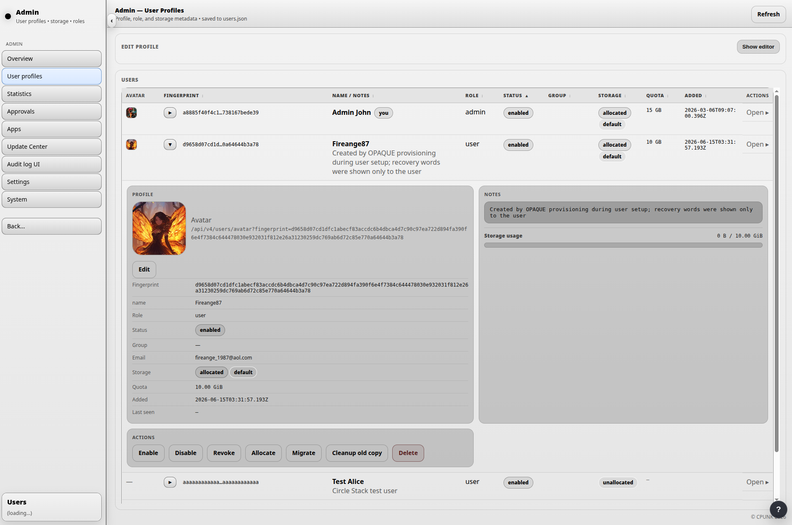
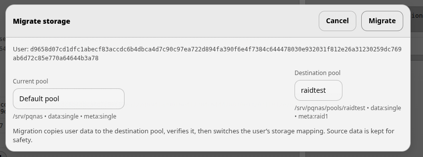
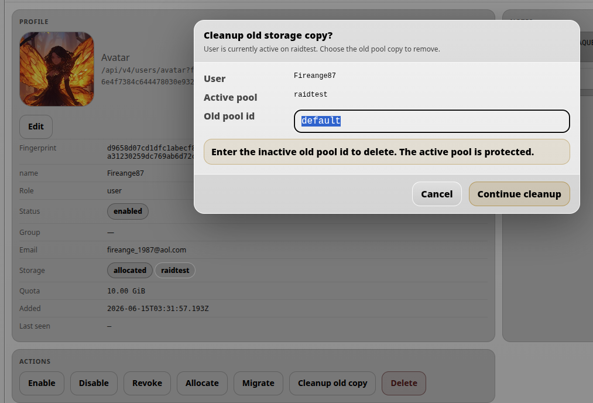

User management
User maintenance tasks are handled from Admin → User Profiles. Approval and onboarding are covered in the user creation flow; this page focuses on ongoing user management after users exist.
User management overview
From Admin → User Profiles, the administrator can enable users, disable users, revoke access completely, set storage quotas and manage storage allocation.

- Enable / activate allows the user to sign in, assuming the selected login method is otherwise valid.
- Disable prevents the user from signing in without deleting the account record.
- Revoke blocks access completely and keeps an administrative record of the account.
- Quota controls the user’s reserved storage amount.
Storage migration between pools
A user can be moved from one storage pool to another. Use the Move action to select the new target pool.

When a user is moved to a new target pool, the old pool copy is intentionally kept for safety. It can later be removed with the Clean old copy action.

Sorting, editing and avatars
The user list can be sorted using the controls in the top bar and by clicking table headers. For example, clicking the Quota header sorts users by storage quota.
The administrator can also set a user avatar. Open the user card and click Edit. The user’s details appear in the Edit profile section. After making changes, remember to click Add / Update so the changes are saved.